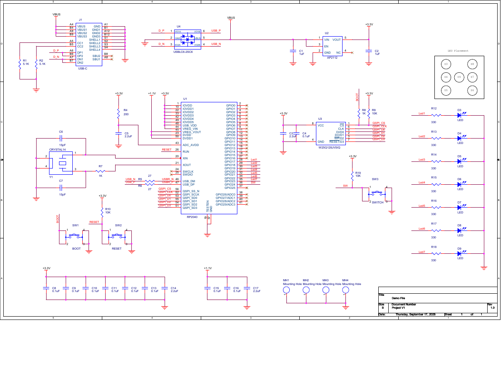

Does the 2D design really become the 3D board?
Pick a build, tweak it, and Lean answers for every component: GREEN proved, YELLOW buildable but needs an action, RED not the design you meant. This static edition includes 79 builds evaluated with the compiled Lean checker.
⊢The tool
1 · CHOOSE A BUILD
Claude suggests ways to build the board. Lean rates each one. Lean's findings go back to Claude for the next round.
New proposals require a live Claude endpoint.The design Sierrathon supplied is built in. You can also drop a KiCad board file.

2 · TWEAK IT
Values from the supplied files
Decoupling capacitors (click to leave one off)
Footprint for each BOM row
Assembly mistakes to inject
3 · LEAN'S VERDICT
…
Click a component to see what Lean found.
| Check | Result | Detail |
|---|
How this was checked
The page turns your choices into a board description and sends it to
leanchip, a binary compiled from LeanVsDFM/Check.lean. It runs reportK, the function the theorems are about. A component's colour is the worst finding that names it; comp_le_overall proves no component is worse than the overall verdict, and bodies_never_collide proves that when the fit check passes no two bodies overlap. For a kernel certificate of one board, run leancheck locally.